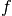
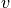
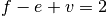
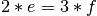
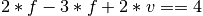
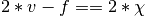
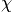
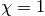
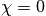
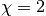

dipy.core.meshes¶
Mesh analysis
-
dipy.core.meshes.argmax_from_adj(vals, vertex_inds, adj_inds)¶ Indices of local maxima from vals given adjacent points
See
reconstruction_performancefor optimized versions of this routine.Parameters: vals : (N,) array-like
values at all vertices referred to in either of vertex_inds or adj_inds‘
vertex_inds : None or (V,) array-like
indices into vals giving vertices that may be local maxima. If None, then equivalent to
np.arange(N)adj_inds : sequence
For every vertex in
vertex_inds, the indices (into vals) of the neighboring pointsReturns: inds : (M,) array
Indices into vals giving local maxima of vals, given topology from adj_inds, and restrictions from vertex_inds. Inds are returned sorted by value at that index - i.e. smallest value (at index) first.
-
dipy.core.meshes.edges(vertex_inds, faces)¶ - Return array of starts and ends of edges from list of faces
- taking regard of direction.
Parameters: vertex_inds : sequence
length N. Indices of vertices
faces : (F, 3) array-like
Faces given by indices of vertices for each of F faces
Returns: edgearray : (E2, 2) array
where E2 = 2*E, twice the number of edges. If e= (a,b) is an edge then [a,b] and [b,a] are included in edgearray.
-
dipy.core.meshes.euler_characteristic_check(vertices, faces, chi=2)¶ If  = number of faces, = number_of_edges and  = number of vertices, the Euler formula says  for a mesh on a sphere. Here, assuming we have a healthy triangulation every face is a triangle, all 3 of whose edges should belong to exactly two faces. So . To avoid integer division and consequential integer rounding we test whether  or, more generally, whether  where  is the Euler characteristic of the mesh.
- Open chain (track) has 
- Closed chain (loop) has 
- Disk has
- Sphere has 
Parameters: vertices : (N,3) array-like
(x, y, z) Point coordinates of N vertices
faces : (M,3) array-like of type int
(i1, i2, i3) Integer indices of the vertices of the (triangular) faces
chi : int, or None
The Euler characteristic of the mesh to be checked
Returns: check : bool
True if the mesh has Euler characteristic chi
-
dipy.core.meshes.neighbors(faces)¶ Return indices of neighbors for each vertex within faces
Parameters: faces : (F, 3) array-like
Faces given by indices of vertices for each of
FfacesReturns: adj : list
For each vertex found within faces, the vertex indices that are neighbors according to the graph given by faces. We expand the list with empty lists in between non-empty neighbors.
-
dipy.core.meshes.peak_finding_compatible(vertices, hemisphere='z', equator_thresh=None, dist_thresh=None)¶ Check that a sphere mesh is compatible with
peak_findingParameters: vertices : (N,3) array-like
(x, y, z) Point coordinates of N vertices
hemisphere : str, optional
Which hemisphere to select. Values of ‘-x’, ‘-y’, ‘-z’ select, respectively negative x, y, and z hemispheres; ‘x’, ‘y’, ‘z’ select the positive x, y, and z hemispheres. Default is ‘z’
equator_thresh : None or float, optional
Threshold (+-0) to identify points as being on the equator of the sphere. If None, generate a default based on the data type
dist_thresh : None or float, optional
For a vertex
von the equator, if there is a vertexv_dashin vertices, such that the Euclidean distance betweenv * -1andv_dashis <= dist_thresh, thenvis taken to be in the opposite hemisphere tov_dash, and onlyv, notv_dash, will appear in the output vertex indices inds. None results in a threshold based on the input data type ofverticesReturns: compatible : bool
True if the sphere mesh is compatible with
peak_finding
-
dipy.core.meshes.sym_hemisphere(vertices, hemisphere='z', equator_thresh=None, dist_thresh=None)¶ Indices for hemisphere from an array of vertices on a sphere
Selects the vertices from a sphere that lie in one hemisphere. If there are pairs of symmetric points on the equator, we return only the first occurring of each pair.
Parameters: vertices : (N,3) array-like
(x, y, z) Point coordinates of N vertices
hemisphere : str, optional
Which hemisphere to select. Values of ‘-x’, ‘-y’, ‘-z’ select, respectively negative x, y, and z hemispheres; ‘x’, ‘y’, ‘z’ select the positive x, y, and z hemispheres. Default is ‘z’
equator_thresh : None or float, optional
Threshold (+-0) to identify points as being on the equator of the sphere. If None, generate a default based on the data type
dist_thresh : None or float, optional
For a vertex
von the equator, if there is a vertexv_dashin vertices, such that the Euclidean distance betweenv * -1andv_dashis <= dist_thresh, thenvis taken to be in the opposite hemisphere tov_dash, and onlyv, notv_dash, will appear in the output vertex indices inds. None results in a threshold based on the input data type ofverticesReturns: inds : (P,) array
Indices into vertices giving points in hemisphere
Notes
We expect the sphere to be symmetric, and so there may well be points on the sphere equator that are both on the same diameter line. The routine returns the first of the two points in the original order of vertices.
-
dipy.core.meshes.vertex_adjacencies(vertex_inds, faces)¶ - Return matrix which shows the adjacent vertices
- of each vertex
Parameters: vertex_inds : sequence
length N. Indices of vertices
faces : (F, 3) array-like
Faces given by indices of vertices for each of F faces
-
dipy.core.meshes.vertinds_faces(vertex_inds, faces)¶ Return faces containing any of vertex_inds
Parameters: vertex_inds : sequence
length N. Indices of vertices
faces : (F, 3) array-like
Faces given by indices of vertices for each of
FfacesReturns: less_faces : (P, 3) array
Only retaining rows in faces which contain any of vertex_inds
-
dipy.core.meshes.vertinds_to_neighbors(vertex_inds, faces)¶ Return indices of neighbors of vertices given faces
Parameters: vertex_inds : sequence
length N. Indices of vertices
faces : (F, 3) array-like
Faces given by indices of vertices for each of
FfacesReturns: adj : list
For each
Nvertex indicated by vertex_inds, the vertex indices that are neighbors according to the graph given by faces.